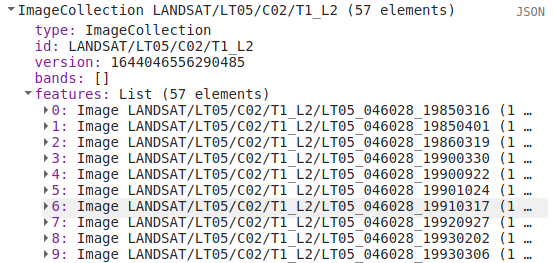
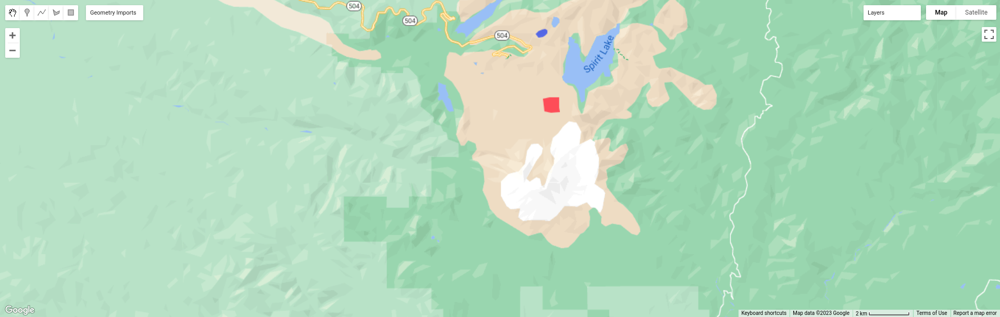
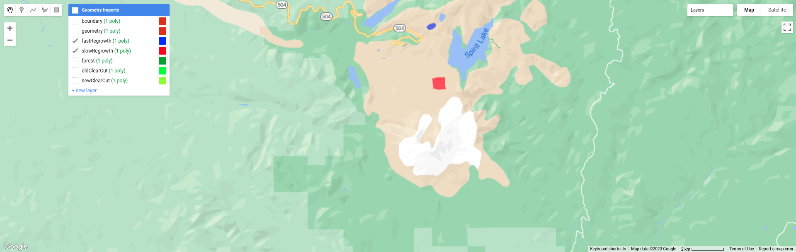

week 4 - change detection in earth engine
introduction
In this practical, you’ll get an introduction to using Google Earth Engine (GEE) to do change detection and analysis. Just like last week, you should be able to do finish the practical even if you have no prior experience with programming. All of the programming steps have been provided for you in a script, and your task will be to run each step in turn and analyse and interpret the results.
getting started
To begin, point your browser to https://code.earthengine.google.com, and log in if you need to. In addition to all of the publicly available datasets, Earth Engine allows you to upload your own datasets (called assets) to work with in the Earth Engine code editor. As part of this practical, we’ll upload the lake shapefiles we used in the Week 2 practical, which you can download in zipped form from the Week 4 Practical folder on Blackboard, or via this google drive link.
importing assets
In the upper right panel, click on the Assets tab:

Click on New, then Table Upload > Shape files:

Click Select, then navigate to the 1979_shapes.zip file that you’ve downloaded. If you like, you can re-name the file that
this asset will be saved as. Leave the other options as they are, and click Upload. Repeat this step for the 1984_shapes.zip
file. It may take a few minutes for the files to upload and be ingested into Earth Engine – you should see a notification in the
Tasks tab that the ingestion has started. Once it is complete, you should see the files listed under your username in the Assets
tab, along with checkmarks next to the ingest tasks in the Tasks tab:

You can click on the asset names to open up a summary of the layer, including a preview of the features contained in the shapefile:

Now, to import the intro script, follow this link to find the script for this week’s practical. Once again, type your name after “Practical 4” on the first line, then click the Save button in the code editor to your egm702 repository that you created last week.
Finally, we’ll need to import the assets that we uploaded, so that we can use them in the script. To do this, you can hover your cursor over the asset name in the Assets tab, then click the arrow icon:

You can also click on the asset name to open the properties window, then click Import. Do this for the 1979_shapes file first – you
should see a new line under the Imports at the top of the script:

Re-name the import by clicking on table, and call it lakes1979. Repeat this for the 1984 shapefile, calling it lakes1984. Your
imports should now look like this:

Have a look over the function definitions – I’ll explain more about each of them as we go, but feel free to look through them and try to get a feeling for how they work.
step 1. finding images
In addition to searching an entire image collection and finding images based on properties (i.e., cloud cover), we can also load images directly using their ID:
// select images using their Landsat ID, clip to our study area boundary,
// and re-name the MSS bands to make it easier to work with both TM and MSS images.
var mss1979 = ee.Image("LANDSAT/LM02/C01/T2/LM02_049028_19790719").clip(boundary)
.select(['B4', 'B5', 'B6'], ['B2', 'B3', 'B4']);
var mss1980 = ee.Image("LANDSAT/LM02/C01/T2/LM02_049028_19800905").clip(boundary)
.select(['B4', 'B5', 'B6'], ['B2', 'B3', 'B4']);
In this case, we’re loading two Landsat 2 MSS scenes: LM02_049028_19790719 and LM02_049028_19800905.
Landsat scene IDs have the following form: LXXX_PPPRRR_YYYYMMDD, where XXX denotes the sensor name (e.g., M02 for
Landsat 2 MSS) , PPP denotes the WRS path (049), RRR denotes the WRS row (028), and YYYYMMDD is the acquisition date
in year-month-day format.
In addition to loading the images by name, we’re clipping these to a boundary surrounding our area of interest
(.clip(boundary)). You should also notice this: (.select([‘B4’, ‘B5’, ‘B6’], [‘B2’, ‘B3’, ‘B4’])). This
will take MSS Band 4 (visible green) and re-name it to Band 2, MSS Band 5 (visible red) and re-name it to Band 3, and MSS Band
6 (near infrared) and re-name it to Band 4. By re-naming the MSS bands this way, we can make them consistent with Landsat TM
and ETM+ scenes, which we will use to look at a time series of Normalized Difference Vegetation Index (NDVI) values later on in
the practical.
In this section, we are also loading a 1984 Landsat 5 TM scene and a 2020 Landsat 8 OLI scene, and adding each of these layers to the map:
Map.addLayer(mss1979, {bands: ['B4', 'B3', 'B2'], min:0, max: 255}, '1979 MSS', false);
Map.addLayer(mss1980, {bands: ['B4', 'B3', 'B2'], min:0, max: 255}, '1980 MSS', false);
Map.addLayer(tm1984, {bands: ['B4', 'B3', 'B2'], min:20, max: 120}, '1984 TM', false);
Map.addLayer(oli2020, {bands: ['B5', 'B4', 'B3'], min: 5800, max: 22500}, '2020 OLI', false);
Run the script – you should notice that the map has moved to centre on the volcano, but no layers have loaded. This is because
of the false argument at the end of the addLayer statement. Rather than adding lots of visible layers at one time, and slowing
down the loading, we can choose to add layers to the map without showing them. You can toggle each of the layers to visible
using the Layers menu in the map panel:

Or, you can replace false with true for each layer and re-run the script – note that this will most likely increase the amount of
time it takes to run the script.
step 2. band maths
In the lectures from the past 2 weeks, we’ve discussed using band maths to help enhance images and help us identify different features. One of the techniques discussed was the Normalized Difference Water Index (NDWI1), which can be used to identify water bodies in a satellite image. The NDWI (for water bodies; there is also an NDWI for water content in vegetation) is the normalized difference between the near-infrared reflectance and the visible green reflectance. At the beginning of the script, I have defined a function to calculate this given a satellite image:
// calculate the normalized difference water index (McFeeters, 1996), which helps to identify
// water bodies in a satellite image.
function ndwi(img){
var nir = img.select('B4'); // return the NIR band for a landsat 1-7 scene.
var green = img.select('B2'); // return the visible green band for a landsat 1-7 scene.
// calculate the NDWI (Green - NIR) / (Green + NIR), and re-name the layer NDWI
return green.subtract(nir).divide(green.add(nir)).rename('NDWI');
}
In the script, you should see the following lines:
// calculate the NDWI for the 1979 and 1980 MSS scenes, using the function defined above.
var ndwi1979 = ndwi(mss1979);
var ndwi1980 = ndwi(mss1980);
// add each ndwi image to the map, using the ndwi visualization palette defined above.
Map.addLayer(ndwi1979, ndwiVis, '1979 NDWI', false);
Map.addLayer(ndwi1980, ndwiVis, '1980 NDWI', false);
This will calculate the NDWI for each of the MSS scenes, and add the results to the Map panel. Run the script, and then toggle the 1979 NDWI image to be visible:

You should see the lakes highlighted as a dark blue colour, while the rest of the image is shades of green and lighter blue. Next, look at the 1980 image:

From the look of it, there’s a lot more standing water on the surface in the 1980 image than in the 1979 image, including a large lake in the crater of the volcano. But is this really the case, or is there something else going on here? Based on the visual results here, do you think that using the NDWI with the same threshold will work in all images? Based on the topics covered in the lectures and your reading, can you think of some ways that we could try to improve the results here?
step 3. thresholding images
Uncomment the first group of lines here, and run the script to plot histograms of the NDWI values for the two MSS images:
var hist1979 = histPlot(ndwi1979, boundary);
hist1979.setOptions({
title: '1979 NDWI Values ',
hAxis: {title: 'NDWI value', titleTextStyle: {italic: false, bold: true}},
vAxis: {title: 'number of pixels', titleTextStyle: {italic: false, bold: true}},
});
print(hist1979);
var hist1980 = histPlot(ndwi1980, boundary);
hist1980.setOptions({
title: '1980 NDWI Values ',
hAxis: {title: 'NDWI value', titleTextStyle: {italic: false, bold: true}},
vAxis: {title: 'number of pixels', titleTextStyle: {italic: false, bold: true}},
});
print(hist1980);
This will produce the following two histograms:


You should notice that the 1979 histogram (left) has a much lower peak value, around -0.4, compared to around -0.05 for the 1980 scene. The 1980 histogram (right) also has a much wider spread of values, while the 1979 histogram has a much taller peak. All of this suggests that if we were to use the same threshold values for both scenes, we would end up with significantly more mis- classification in the 1980 image.
The next set of lines:
// create a feature collection (vector) representation of areas classified as water
// using the ndwi and a threshold.
var watermask1979 = getWaterMask(mss1979, 0.15);
var watermask1980 = getWaterMask(mss1980, 0.45);
Map.addLayer(watermask1979, {color: '1000ff'}, '1979 water mask', true);
Map.addLayer(watermask1980, {color: '0099ff'}, '1980 water mask', false);
Map.addLayer(lakes1979, {color: '6699ff'}, '1979 Lakes', false);
Map.addLayer(lakes1984, {color: 'cc66ff'}, '1984 Lakes', false);
Will create a feature collection (vector dataset) representation of the areas classified as water in the two MSS images, using the given thresholds (0.15 for the 1979 image, 0.45 for the 1980 image):

Go ahead and try different thresholds – remember that you can use the Inspector tab to get pixel/layer values by clicking on the map. You can also use the histograms to help you determine suitable thresholds, and compare the results visually with the two images (you’ll have to toggle them to visible using the Layers panel), or even with the background map or satellite images (though remember that things have most likely changed a lot in the past 40 or so years).
When you are satisfied with the results, uncomment these lines of code to export your 1979 water mask to a shapefile:
// export the 1979 water mask to a shapefile
Export.table.toDrive({
collection: watermask1979,
description: 'waterMask1979',
fileFormat: 'SHP'
});
This will create a task in the Tasks tab that will allow you to save the file to your Google Drive, where you will be able to download it to your computer and use it in your GIS software.
step 4. summary statistics with features
Looking at Spirit Lake in the 1980 and 1984 images, you should notice that the lake is covered by a large number of floating trees (you can see this in even more detail by turning on the high-resolution satellite image in the background and zooming in):


These trees were knocked over in the 1980 eruption, and have been floating on the lake ever since. Looking at the 2020 Landsat 8 OLI image, you should notice that the trees are not always in the same place – they move around over time. One question that you might ask, then, is: is the area of the lake covered by trees constant in time, or has it changed? This is a question that we can try to answer using some of the tools we have learned so far.
To start, uncomment the following lines:
// select only Spirit Lake, using the 1984 outline:
var spiritLake = lakes1984.filter(ee.Filter.inList('name', ['Spirit Lake']));
// create a histogram chart of values in the NIR band for our 1984 image.
var histChart = histPlot(tm1984.select('B4'), spiritLake);
histChart.setOptions({
title: 'NIR Histogram',
hAxis: {title: 'NIR value', titleTextStyle: {italic: false, bold: true}},
vAxis: {title: 'number of pixels', titleTextStyle: {italic: false, bold: true}},
});
print(histChart);
This will select only the Spirit Lake outline from our 1984 outlines that we uploaded at the beginning of the practical, then make a histogram of the NIR (Band 4) values from the pixels that fall within that outline:

From this, we can see a clear bimodal distribution (i.e., there are two peaks) in the NIR values. We can use this to choose a threshold to help us segment (divide) the image, much the same way that we chose thresholds for the NDWI values earlier in the practical. From the histogram above, you might guess that we could choose a threshold between 40 and 50, and it would separate the two classes quite effectively.
To choose our threshold, we will use something called Otsu’s method2. We will cover this a bit more next week, but in short: Otsu’s method helps us to choose the threshold between ‘bright’ and ‘dark’ pixels that maximizes the variance (e.g., the difference) between the two classes.
The following lines of code:
// create a histogram object to pass to our otsu function
var histogram = tm1984.select('B4').reduceRegion({
reducer: ee.Reducer.histogram(255, 2)
.combine('mean', null, true)
.combine('variance', null, true),
geometry: spiritLake,
scale: 30,
bestEffort: true});
// get the otsu threshold for the NIR band
var waterThresh = otsu(histogram.get('B4_histogram'));
print('Otsu threshold:', waterThresh);
Will create a histogram object (not a plot, but an array representing the frequency of each value) that we can pass to the otsu()
function defined at the top of the script. This will create a chart, showing the inter-class variance as a function of the chosen
threshold value:
{kind=link}
From this plot, we can see that indeed, the peak of the interclass variance is between 40 and 50 – in fact, the value printed to the console should be 44.5 or so (the exact value may vary slightly). This is the threshold value we will use to differentiate between open water and trees in the lake, and plot the area of open water as a function of time, to see whether the value is changing over time, or whether it remains constant.
The following lines of code:
// get a collection of water masks for all landsat TM images, using our threshold value,
// and making sure to only take images where we can see the whole lake cloud-free.
var waterMasks = ee.ImageCollection("LANDSAT/LT05/C01/T1")
.filterMetadata('WRS_PATH', 'equals', 46) // select only WRS Path 46
.filterMetadata('WRS_ROW', 'equals', 28) // select only WRS Row 28
.map(function(image){return ee.Image(image).clip(geometry)}) //clip to a rough window
.map(cloudPercentage) // find the cloudy pixels within our region of interest
.filter(ee.Filter.lt('cloud_cover_roi', 1)) // select only cloud-free images within our ROI
.map(function(image){
var area = ee.Image.pixelArea();
var mask = image.select('B4').lte(waterThresh).multiply(area).rename('waterMask');
return image.addBands(mask);
}) // mask pixels above the chosen threshold and multiply pixels by area
.map(function(image){
return ee.Image(image).clip(spiritLake).updateMask(image.select('waterMask'));
}) // clip the image so that only the lake pixels are left
.select('waterMask') // select the waterMask band
.map(getWaterArea); // sum the valid (i.e., water) pixels to get the area
Will find all of the cloud-free Landsat 5 TM images over Spirit Lake (between 1984 and 2011) and calculate the area of pixels classified as water using the threshold we calculated above. It’s a very long, complicated chain of commands – but stop for a moment and imagine how much work it would take to do this “by hand” – you should get a result here within a minute or so.
The next set of commands will take the water area and date attributes from each image and plot them as a series of points:
// get the image dates from our image collection
var dates = waterMasks.toList(1000).map(function(item){
return ee.Image(item).get('system:time_start');
});
// get the water area from the images in our image collection
var waterArea = waterMasks.toList(1000).map(function(item){
return ee.Image(item).get('water_area');
});
// plot the number of water pixels as a function of time
var chart = ui.Chart.array.values({array: waterArea, axis: 0, xLabels: dates})
.setSeriesNames(['water area'])
.setOptions({
title: 'open-water area',
hAxis: {title: 'date', titleTextStyle: {italic: false, bold: true}},
vAxis: {title: 'area (sq km)', titleTextStyle: {italic: false, bold: true}},
curveType: 'function'
});
print(chart);
When it finishes running, you should see the following chart:

This is an interesting result – for one thing, it does look like the open-water area has been increasing since 1985. But, there are some interesting ‘spikes’ in the data as well – in many years, there’s a clear maximum of ~11.5 km2 of open water, which then drops back down to ~7 km2. This doesn’t seem particularly likely. There’s also a point that suggests the entire lake was covered by trees at one point in 2008 – this doesn’t seem very likely, either. So, what is going on?
To work on understanding what’s happening, you can uncomment the following lines of code:
print('Water Mask Collection', waterMasks); // list the waterMasks to help select individual masks
print('October 08, 1990 Image', waterMasks.toList(1000).get(17)); // print info about the 17th mask
// add the landsat image corresponding to the 17th mask to the map
Map.addLayer(ee.Image("LANDSAT/LT05/C01/T1/LT05_046028_19901008"),
{bands: ['B4', 'B3', 'B2'], min: 8, max: 80},
'1990 Image', true); // change false to true to make this image visible
This will list each of the images that were used to create the water masks, then select the first spike (an image from October 10, 1990), which has an index in the list of water masks of 17. From the console, you can see the id of the 18th image (which has index 17, as arrays in Javascript start counting from 0):

I have included a line to add this image to the map. To find other images, you can examine their dates by hovering your cursor over the spikes on the plot above, then looking for those dates in the list of image IDs from the collection:
{kind=link}
See if you can’t work out what’s going on here – if you get stuck, you can post your questions in the discussion forum. How would you go about fixing this issue? Don’t worry about the programming steps, necessarily – at the moment, it’s more important here to get an idea for what the pattern in the data is actually representing, and how you would try to fix that, rather than being able to work out the programming steps to actually solve the issue (that can come later).
Once you think you’ve managed to puzzle out what’s going on with the timeseries, move on to the next step.
step 5. change vector analysis
For this part of the practical, we’re going to look at the post-eruption recovery using Landsat 5 TM images from 1984 and 2011:
// select two surface reflectance images, one from 1984 and one from 2011.
var tm1984 = ee.Image("LANDSAT/LT05/C01/T1_SR/LT05_046028_19840719").clip(boundary);
var tm2011 = ee.Image("LANDSAT/LT05/C01/T1_SR/LT05_046028_20110730").clip(boundary);
Run the script, and have a look at the two images – what do you notice? What changes stand out the most in between the two images? You might notice that the area North of the peak has regained some vegetation since the 1980 eruptions, or you may notice some areas of clear-cutting in the surrounding forests. To investigate these changes, we’re going to use change vector analysis (CVA). While CVA can be used for any number of band differences, we’re going to stick to the differences in NIR and Red reflectance between the two images.
Once you’ve looked around the two images and observed some of the changes, uncomment the next block of code, which will compute the difference between the two images and select the NIR and Red bands. It will also calculate the magnitudes and angles of the change vectors, and re-classify the angles so that the values in the image correspond to the quadrant the angle falls in.
// compute the difference between the two images, and select bands 4 and 3 (NIR and Red)
var diff = tm2011.subtract(tm1984).select(['B4', 'B3']);
// compute the magnitude of the change vectors as the square root of the
// sum of the squared differences.
var magnitude = diff.pow(2).reduce(ee.Reducer.sum().unweighted()).sqrt().rename('magnitude');
// compute the angle of the change vectors and convert to degrees
var angle = diff.select('B3').atan2(diff.select('B4'))
.multiply(180).divide(Math.PI).rename('angle');
// create a reclassified image of the angles, with the value set to the quadrant
// each angle range corresponds to.
var angleReclass = ee.Image(1)
.where(angle.gt(0).and(angle.lte(90)), 1)
.where(angle.gt(90).and(angle.lte(180)), 2)
.where(angle.gt(-90).and(angle.lte(0)), 4)
.where(angle.gt(-180).and(angle.lte(-90)), 3).clip(boundary);
The next line will mask the reclassified image so that only large changes (magnitude greater than 200) are shown:
// threshold the reclass image by changes w/ magnitude greater than 200
angleReclass = angleReclass.updateMask(magnitude.gte(200));
Run the script – you should see this image (you may have to turn off the Landsat scenes first):

In this image, red colours correspond to increases in both NIR and Red reflectance, white corresponds to increases in NIR and decreases in Red reflectance, purple corresponds to decreases in NIR and increases in Red reflectance, and blue corresponds to decreases in both NIR and Red reflectance.
In a number of areas, the blue colour represents forest growth. To understand why this is, we have to remember both what these changes represent – a decrease in both Red and NIR reflectance – and also what the forest is replacing: in many cases, grassy meadows or new-growth trees, both of which tend to have higher reflectances than older conifer forests.
See if you can work out what some of the other differences represent – remember that some changes might represent more than one kind of change. You can also try looking at the angle image and interpreting it more directly, or changing the reclassification to represent more angle ranges.
step 6. plotting time series
The final portion of this practical will cover how we can get time series of data from images and visually inspect the results. The
first part of this section declares a variable, ndvi_patches, that is made up of individual polygons imported at the top of the
script:
var ndvi_patches = ee.FeatureCollection([fastRegrowth, slowRegrowth,
forest, oldClearCut, newClearCut]);
The next sections of code here deal with loading Landsat images and filtering based space and cloud cover, similar to what we have done in previous steps. After this section, these lines of code:
// combine tm, etm+, and mss images, add an NDVI band, and sort by date.
var allNDVI = mss.merge(tm).map(getNDVI).select('NDVI').sort('system:time_start');
print(allNDVI);
merge the MSS and TM/ETM+ image collections, calculate the NDVI for each image, and sort by acquisition date. The next lines:
// plot a chart of the mean ndvi values, calculated using different polygons
// representing different landcover areas
var ndviChart = ui.Chart.image
.seriesByRegion({
imageCollection: allNDVI,
regions: ndvi_patches, // average using the features in each ndvi patch
reducer: ee.Reducer.mean(),
seriesProperty: 'label', // use the label values to plot individual series
scale: 100,
xProperty: 'system:time_start'})
.setOptions({
title: 'Mean NDVI',
hAxis: {title: 'date', titleTextStyle: {italic: false, bold: true}},
vAxis: {title: 'ndvi value', titleTextStyle: {italic: false, bold: true}},
curveType: 'function'})
.setSeriesNames(['ndvi']);
print(ndviChart);
will plot the average values for each of the individual polygons in ndvi_patches. You can see what this looks like below. Note
that some of the apparent lack of seasonality before about 2000 is mostly a result of the lower temporal resolution – Landsat
acquisitions were often limited during this time, and so some years will only have a few available images.

If you open the chart (click on the icon in the upper right-hand corner), you can export the data as a CSV file for further analysis. You can also add (or remove) polygons from the plot. To add your own polygon, you can use the digitizing tools located in the upper left-hand corner of the map panel:
{kind=link}
Be sure to start the polygon as a new layer (click on + new layer at the bottom of the Geometry Imports panel):
{kind=link}
Next, start digitizing a polygon – try to make sure that the polygon represents one type of area. Remember that you can use the Landsat images, as well as the background satellite images, to help you. From the Geometry Imports panel, click the gear icon next to your new layer to change the properties:

Change the name to something other than geometry (or example), then change it to Import as a Feature, and click to add
property to the feature. Call it label, and add a value for the label.

Click OK, then digitize your polygon (if you haven’t already). Note that each feature can only contain a single polygon – to add
multiple polygons, you’ll need to create multiple features. You can then update ndvi_patches and re-run the script to update
the chart:

Feel free to try different polygons, and examine the different time series plots – try using the CVA angle map to help you decide areas to look further into.
This is the end of this Practical – next week, we’ll look into using Earth Engine to do some more advanced classification techniques, and run an accuracy analysis on the results.
references and notes
- 1
McFeeters, S. K. (1996). Int. J. Rem. Sens., 17(7), 1425–1432. doi: 10.1080/01431169608948714
- 2
Otsu, N. (1979). IEEE Trans. Systems, Man, Cybernetics, 9(1), 62–66. doi: 10.1109/TSMC.1979.4310076